Bayesian Linear Regression¶
The model¶
Some of this infomation and notation is borrowed from Chapter 3 of C.M. Bishops Pattern Recognition and Machine Learning book [Bishop06].
Lets assume that the target variable  is a deterministic function with additive Gaussian noise.
is a deterministic function with additive Gaussian noise.
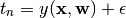
where
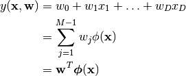
The error term 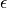 is a zero mean Gaussian random variable with precision  .
By using a basis function, 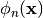 we may use non-linear transformations on the data,however, the model is still linear with respect to the weight vector 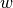. For convenience we define 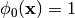.
.
By using a basis function, 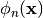 we may use non-linear transformations on the data,however, the model is still linear with respect to the weight vector 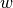. For convenience we define 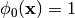.
The other basis functions may be nonlinear functions like the sigmoidal function of logistic sigmoid function. We can write the likelihood as
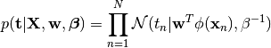
We formally define the model as:
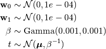
Given the model we can visualize the joint distribution using a plate diagram for this Bayesian linear regression model.
Here is a summary of te parameters and variables
Parameter/Variable Description 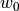 bias parameter allows for any fixed offset in the data 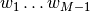 regression coefficients 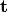 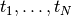 - target variables 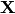 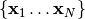 - explanatory variables 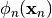 basis functions precision parameter over 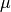 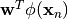 mean parameter over
Generate data from a simple model¶
If for the moment we ignore the basis functions we can write the familiar form of linear regression as

{kind=link}
Lets generate data from 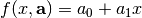 where  .
We assume the noise known so we set the precision 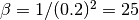.
.
We assume the noise known so we set the precision 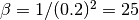.
<<draw-samples>>=
import numpy as np
np.random.seed(101)
def draw_samples(n):
a0,a1 = -0.3,0.5
trueX = np.random.uniform(-1,1,n)
trueT = a0 + (a1*trueX)
return trueX, trueT + np.random.normal(0,0.2,n)
N = 12
x,t = draw_samples(N)
print 'x = %s'%[round(_x,2) for _x in x]
print 't = %s'%[round(_t,2) for _t in t]
x = [0.03, 0.14, -0.94, -0.66, 0.37, 0.67, -0.39, 0.79, 0.44, -0.62, 0.11, -0.3]
t = [-0.18, -0.35, -0.73, -0.78, -0.3, 0.22, -0.45, 0.49, 0.44, -0.47, -0.19, -0.11]
We will be using JAGS [Plummer03] to implement this model so we need to save the data to a file for later use. So we need to save the data the same way that thr dump() function does in R.
<<save-samples>>=
import re
fid = open('line-reg-simple-data.R','w')
fid.write('x <-\nc(%s)\n'%(','.join((str(_x) for _x in x))))
fid.write('t <-\nc(%s)\n'%(','.join((str(_t) for _t in t))))
fid.write('N <-\n%s\n'%(str(N)))
fid.close()
Set up the rest of the files for JAGS¶
Model file¶
We take the model defination provided in the previous section and put it into the BUGS language in the form of a file. Here are the contents of that file.
1 2 3 4 5 6 7 8 9 10 | model {
for (i in 1:N) {
mu[i] <- w0 + w1*(x[i] - mean(x));
t[i] ~ dnorm(mu[i],beta);
}
w0 ~ dnorm(0.0,1.0E-4);
w1 ~ dnorm(0.0,1.0E-4);
beta ~ dgamma(1.0E-3,1.0E-3);
sigma <- 1.0/sqrt(beta);
}
|
Download: line-reg-simple.bug
Init files¶
We are going to run two MCMC chains so we need to initialize two files with initial values.
<<save-init-files>>=
for fileName in ['line-reg-simple-inits-1.R','line-reg-simple-inits-2.R']:
fid = open(fileName,'w')
fid.write('w0 <- %s\n'%(str(np.random.uniform(0.001,1.0))))
fid.write('w1 <- %s\n'%(str(np.random.uniform(0.001,1.0))))
fid.write('beta <- %s\n'%(str(np.random.uniform(0.001,1.0))))
fid.close()
Commands file¶
Finally, the file specifing to JAGS which files to use and how to run the model.
1 2 3 4 5 6 7 8 9 10 11 12 13 14 15 | /* Simple regression model
*/
model in "line-reg-simple.bug"
data in "line-reg-simple-data.R"
compile, nchains(2)
parameters in "line-reg-simple-inits-1.R", chain(1)
parameters in "line-reg-simple-inits-2.R", chain(2)
initialize
update 1000
monitor set w0
monitor set w1
monitor set sigma
monitor set beta
update 20000
coda *
|
Download: line-reg-simple.cmd
Run the Model¶
<<run-jags>>=
import subprocess,time
cmd = 'jags line-reg-simple.cmd'
process = subprocess.Popen(cmd,shell=True,stderr=subprocess.PIPE,
stdout=subprocess.PIPE)
time.sleep(3)
stdOut, stdErr = process.communicate()
print 'STDOUT\n',stdOut
print 'STDERR\n',stdErr
STDOUT
Welcome to JAGS 3.2.0 on Tue Jun 18 11:47:55 2013
JAGS is free software and comes with ABSOLUTELY NO WARRANTY
Loading module: basemod: ok
Loading module: bugs: ok
Reading data file line-reg-simple-data.R
Compiling model graph
Resolving undeclared variables
Allocating nodes
Graph Size: 72
Reading parameter file line-reg-simple-inits-1.R
Reading parameter file line-reg-simple-inits-2.R
Initializing model
Updating 1000
Updating 20000
STDERR
Plot the chains¶
Make a plot of the MCMC chains showing the monitored variables
<<make-mcmc-plots>>=
import os
from PlottingLib import *
os.rename('CODAchain1.txt', 'line-reg-simple-coda1.txt')
os.rename('CODAchain2.txt', 'line-reg-simple-coda2.txt')
os.rename('CODAindex.txt', 'line-reg-simple-index.txt')
chainIdx = read_chain_index('line-reg-simple-index.txt')
chain1 = read_chain_file('line-reg-simple-coda1.txt')
chain2 = read_chain_file(line-reg-simple-coda2.txt)
make_plots(chainIdx,chain1,chain2,figName='line-reg-simple-mcmc.png')
estimates = get_estimates(chainIdx,chain1,chain2)
showing chain, parameter, mean, std...
As a reminder the values used to simulate the data were: 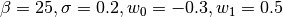.
{kind=link}
Plot the lines¶
<<make-line-plot>>=
from scipy import polyval,polyfit
from RegressionLib import *
# Get the fits
n = x.size
fit=polyval([0.5,-0.3],x)
fit1=polyval([estimates['w1'][0],estimates['w0'][0]],x)
fit1 += np.random.normal(0,estimates['sigma'][0])
mserror1 = np.sqrt(np.sum((fit1-t)**2)/n)
print('Using Bayesian regression...')
print('parameters: w0=%.2f w1=%.2f \nregression: w0=%.2f w1=%.2f,std error= %.3f' % \
(-0.3,0.5,estimates['w0'][0],estimates['w1'][0],mserror1))
fit2,coeffs2 = get_1D_linear_fit(x,t)
fit2 = fit2.flatten()
mserror2 = np.sqrt(np.sum((fit2-t)**2)/n)
print('\nUsing least squares...')
print('parameters: w0=%.2f w1=%.2f \nregression: w0=%.2f w1=%.2f, ms error= %.3f' % \
(-0.3,0.5,coeffs2[0],coeffs2[1],mserror2))
(ar,br)=polyfit(x,t,1)
fit3=polyval([ar,br],x)
mserror3 = np.sqrt(np.sum((fit3-t)**2)/n)
print('\nUsing scipy.polyfit...')
print('parameters: w0=%.2f w1=%.2f \nregression: w0=%.2f w1=%.2f, ms error= %.3f' % \
(-0.3,0.5,br,ar,mserror3))
# determine the credible interval
sampleSize = 5000
w0Pst = get_posterior_sample(chainIdx,chain1,chain2,'w0',sampleSize)
w1Pst = get_posterior_sample(chainIdx,chain1,chain2,'w1',sampleSize)
sigmaPst = get_posterior_sample(chainIdx,chain1,chain2,'sigma',sampleSize)
lower,upper = [],[]
xx = np.linspace(x.min(),x.max(),10)
for _xx in xx:
tt = (w0Pst + (w1Pst * _xx))
lower.append(np.percentile(tt, 2.5))
upper.append(np.percentile(tt, 97.5))
# plot
fig = plt.figure()
ax1 = fig.add_subplot(121)
ax1.plot(x,t,'o')
p1 = ax1.plot(x,fit,color='#000000',linestyle=':',linewidth=2.0)
p2 = ax1.plot(x,fit1,'#FF5500',linestyle='-',linewidth=2.0)
p3 = ax1.plot(x,fit2,color='#0055FF',linestyle='-',linewidth=2.0)
ax1.legend([p1[0],p2[0],p3[0]],['Original','Bayesian','Least Sqrs'], loc='upper left')
ax1.set_ylim([-1.2,1])
ax1.set_xlim([-1.2,1])
ax1.set_aspect(1./ax1.get_data_ratio())
ax2 = fig.add_subplot(122,aspect='equal')
ax2.plot(x,t,'o')
p4 = ax2.plot(x,fit1,'#FF5500',linestyle='-',linewidth=2.0)
p5 = ax2.plot(xx,lower,'#FF5500',linestyle=':',linewidth=2.0)
p6 = ax2.plot(xx,upper,'#FF5500',linestyle=':',linewidth=2.0)
ax2.legend([p4[0],p5[0]],['Bayesian','Cred. Inter.'], loc='upper left')
ax2.set_ylim([-1.2,1])
ax2.set_xlim([-1.2,1])
ax2.set_aspect(1./ax2.get_data_ratio())
fig.savefig('line-reg-simple-lines.png',dpi=200)
Using Bayesian regression...
parameters: w0=-0.30 w1=0.50
regression: w0=-0.20 w1=0.65,std error= 0.196
Using least squares...
parameters: w0=-0.30 w1=0.50
regression: w0=-0.18 w1=0.65, ms error= 0.195
Using scipy.polyfit...
parameters: w0=-0.30 w1=0.50
regression: w0=-0.18 w1=0.65, ms error= 0.195
{kind=link}
Note that unlike a frequentist confidence interval the credible interval can be interpreted probabilistically. For example, we can say that given the data there is a 95% chance that the parameter falls within the shown interval.
The additional functions are in:
Literature¶
| [Bishop06] | C. M. Bishop. Pattern Recognition and Machine Learning, Springer, August 2006. |
| [Plummer03] | M. Plummer. JAGS: A Program for Analysis of Bayesian Graphical Models Using Gibbs Sampling, Proceedings of the 3rd International Workshop on Distributed Statistical Computing, March 2003. |